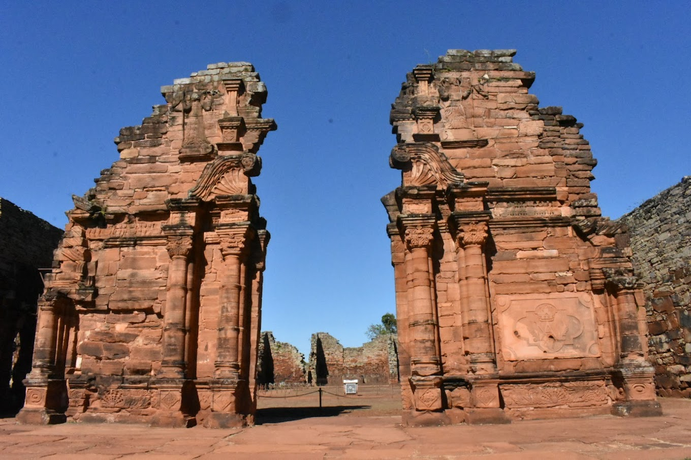

Las cataratas del Iguazú, además de ser Patrimonio de la Humanidad por UNESCO, fueron nombradas como una de las 7 Maravillas Naturales del Mundo.
En la actualidad se pueden ver 10 metros de altura en sus muros laterales. En el ingreso a las ruinas también se puede visitar un pequeño museo que guarda restos arqueológicos de gran valor, como piedras labradas, herramientas e instrumentos musicales, entre otras cosas.
Parque de usos multiples, tiene un jardin botanico , lagos y canales, senderos para bicicletas, trotar, etc. Es un clasico para pasear.